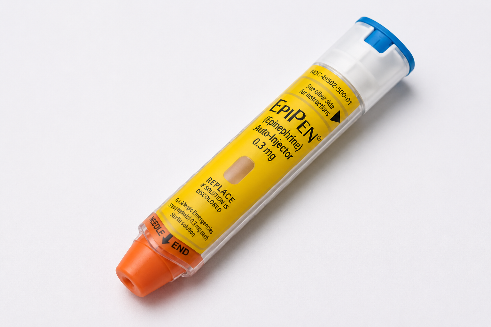

The History of the Epipen :
The Epipen is a allergic emergency can be caused by stinging and biting insects, allergy injections, foods, medicines, exercise, or unknown causes. The first epinephrine autoinjector was brought to market in 1983. Epinephrine autoinjectors are hand-held devices carried by those who have severe allergies; the epinephrine delivered by the device is an emergency treatment for anaphylaxis. The device is used in the middle of the outer side of the thigh, which corresponds to the location of the vastus lateralis muscle. The EpiPen was primarily invented by Sheldon Kaplan, an engineer at Survival Technology Inc., in the mid-1970s

The Epipen
